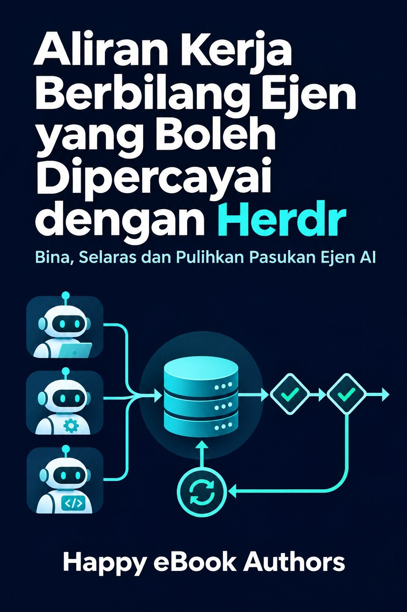

Aliran Kerja Berbilang Ejen yang Boleh Dipercayai dengan Herdr
Bina, Selaras dan Pulihkan Pasukan Ejen AI

Aliran Kerja Berbilang Ejen yang Boleh Dipercayai dengan Herdr
Bina, Selaras dan Pulihkan Pasukan Ejen AI
Bina pasukan ejen AI yang boleh diharap dengan Herdr. Panduan praktikal ini menunjukkan cara menetapkan kontrak tugas, menyelaras peranan yang bekerja serentak, menyemak kod secara bebas, mengekalkan konteks semasa serah tugas dan memulihkan kerja selepas kegagalan. Ikuti sepuluh bab praktikal yang merangkumi persekitaran pembangunan Herdr TUI, pembahagian tugas kepada beberapa ejen, semakan silang kod, memori bersama, projek laman web lima ejen, penyelidikan teknikal berasaskan sumber, saluran paip automasi terkawal dan baris gilir kerja berterusan. Setiap bab menekankan penerimaan yang boleh diperhatikan: semak fail, antara muka, ujian dan bukti—jangan bergantung pada dakwaan ejen bahawa tugas telah selesai. Buku ini disertakan lampiran kod dan prompt lengkap serta sumber pembaca Bahasa Melayu dengan contoh yang boleh dijalankan, prompt peranan, ujian, antara muka web dan panduan persediaan ringkas. Pakej sumber boleh dimuat turun tanpa log masuk GitHub: https://github.com/t945935/herdr-multi-agent-reader-ms/releases/tag/v1.0.1 Sesuai untuk pembangun, pendidik teknikal, pembelajar kendiri dan pasukan kecil yang mempunyai pengetahuan asas Python, terminal, JSON dan Git. Contoh menggunakan Herdr TUI, Python, FastAPI dan SQLite. Versi alat boleh berubah; semak arahan dalam persekitaran anda sendiri.